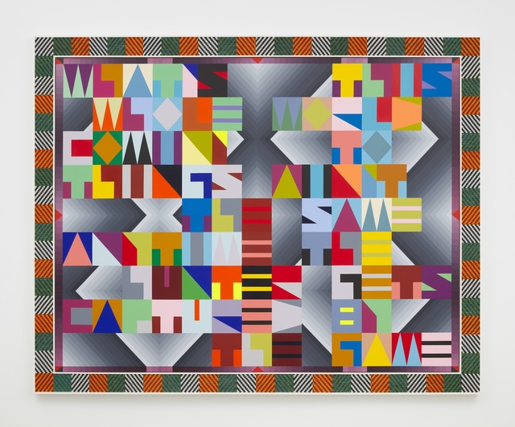

Wickerham & Lomax: Selection
March 21 - April 21, 2021
Wickerham & Lomax’s work explores the use of digital technologies. They investigate digital media’s effects on personal identity, relationships, social codes, and psychic formations.

Jeffrey Gibson: When Fire is Applied to a Stone it Cracks
March 24 - April 26, 2022
Gibson’s work consists of resulting multimedia, floor-to-ceiling installation questions long-held institutional categorizations and representations of Indigenous peoples and Native American art.

Jacob Lawrence & The Artists of Black Orpheus: Transcontinental Modernism
October 14 - November 15, 2023
This exhibit explores the connection between African American artist Jacob Lawrence and his contemporaries based on the African continent during a period of artistic innovation that emerged from socio political upheaval.